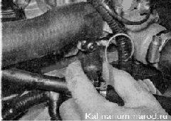
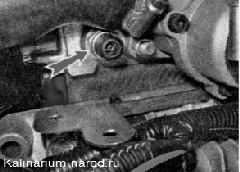

Датчик указателя температуры охлаждающей жидкости - проверка и заменаДля выполнения работы потребуются: — мультиметр в режиме омметра с пределом измерения от 0,1 до 10 кОм; — термометр с пределом изменения не менее 100 С; — небольшая термостойкая емкость объемом около 0,5 л. Совет Термометр можно заменить цифровым мультиметром с режимом измерения температуры. Снятие 1. Сливаем охлаждающую жидкость. 2. Снимаем воздушный фильтр. 3. Сжав фиксаторы, отсоединяем от датчика колодку провода  Проверка Проверяем датчик таким же способом, как и датчик температуры охлаждающей жидкости системы управления двигателем . Подсоединять щупы омметра следует к выводу и к корпусу датчика. Сопротивление исправного датчика должно быть близко к данным, указанным в таблице:
Неисправный датчик заменяем. Маркировка датчика нанесена на шестигранной части его корпуса. Установка 1. Устанавливаем датчик в последовательности, обратной снятию. 2. Заполняем систему охлаждения двигателя жидкостью. 3. Запускаем двигатель и убеждаемся в отсутствии утечек охлаждающей жидкости из-под датчика. При необходимости следует переустановить датчик, нанеся на его резьбовую часть термостойкий герметик. |